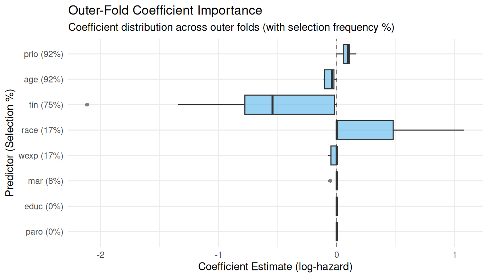

08. End-to-End Nested Survival Run and Multi-Machine Sharding on Rossi Data
Source:vignettes/rossi_nested_survival.Rmd
rossi_nested_survival.RmdOverview
In multi-domain clinical survival pipelines, each domain report traditionally strings together ~150 lines of boilerplate:
-
Validate counting-process intervals
(
validate_start_stop()) -
Construct subject-grouped nested folds
(
rsample::nested_cv()+rsample::group_vfold_cv()) -
Inner hyperparameter tuning
(
tune_alpha_by_split()) -
Candidate model selection
(
select_candidate_models()) -
Outer-fold scoring
(
score_outer()) -
Predictor importance & selection stability
(
summarize_outer_importance()) -
Censoring weight sensitivity comparison
(
compare_censoring_weights())
This vignette demonstrates how to run the entire nested survival
workflow on the packaged rossi_data() recidivism
cohort:
-
One-call execution with
nested_survival_run()(includingsummary(),plot(), andtidy()methods) -
Sharding across machines with
shard = c(1, 2)andshard = c(2, 2), merging completed shards withcollect_checkpoints(), and pruning stale checkpoints withclean_checkpoints() -
Self-rendering reproducibility appendix via
repro_appendix()
1. Preparing rossi_data() in Start/Stop Format
The packaged rossi_data() dataset tracks 432 individuals
over a 52-week follow-up window with baseline covariates
(fin, age, race,
wexp, mar, paro,
prio, educ) and weekly employment indicators
(emp1–emp52).
For a fast, self-contained demonstration, we convert a 90-subject
subset of rossi_data() into counting-process
(tstart, tstop, status) intervals and run
validate_start_stop() to verify interval integrity and
censoring rate:
raw_rossi <- rossi_data()
# Construct counting-process (tstart, tstop, status) intervals per subject
rossi_cohort <- raw_rossi |>
slice(1:90) |>
mutate(
id = row_number(),
tstart = 0,
tstop = as.numeric(week),
status = as.integer(arrest)
) |>
select(id, tstart, tstop, status, fin, age, race, wexp, mar, paro, prio, educ)
val <- validate_start_stop(
rossi_cohort,
id = "id",
start = "tstart",
stop = "tstop",
status = "status"
)
val
#> TempleCBE Start/Stop Survival Data Check
#> ----------------------------------------
#> Subjects: 90 (21 with event, 69 censored [76.7%])
#> Intervals (rows): 90 (events: 21, missing: 0)
#> Overlapping intervals: 0
#> Gapped intervals: 0
#> Events before last row: 0
#> Rows after an event: 0
#> Non-positive intervals: 0
#> Tied times: 72 stop time(s), 3 event time(s)
#> Status: VALID2. One-Call Nested Survival Run
(nested_survival_run())
nested_survival_run() executes all seven stages in
order, writes fingerprinted checkpoints and
render_manifest.json into run_dir, and resumes
automatically if rerun with identical data and settings:
run_dir <- file.path(tempdir(), "rossi_e1_run")
rec <- recipe(~ ., data = rossi_cohort) |>
update_role(id, tstart, tstop, status, new_role = "id variable")
features <- c("fin", "age", "race", "wexp", "mar", "paro", "prio", "educ")
candidate_formulas <- c(
"fin + age + prio",
"fin + age + race + wexp + mar + paro + prio + educ"
)
rossi_run <- nested_survival_run(
data = rossi_cohort,
recipe = rec,
id = "id",
start = "tstart",
stop = "tstop",
status = "status",
domain = "Recidivism",
run_dir = run_dir,
feature_names = features,
formulas = candidate_formulas,
outer_v = 3,
inner_v = 3,
alphas = c(0.2, 0.5, 0.8),
top_n = 2,
internal_folds = 3,
cox.ties = "breslow",
seed = 67025
)
rossi_run
#> <cbe_nested_survival_run> Domain: Recidivism [completed]
#> Subjects: 90 (Events: 21, Censored: 69 [76.7%])
#> Outer folds: 3 | Candidate models: 4 | Outer fits: 12
#> Median outer IBS: 0.0714 (IQR: 0.0521) | Seed: 67025 (v0.5.6)
#> Run directory: /tmp/RtmpptqoTk/rossi_e1_run (fingerprint: 57dc98da715b)Inspecting Results with summary(), tidy(),
and plot()
summary(rossi_run)
#> Summary: Nested Survival Run (Domain: Recidivism)
#> --------------------------------------------------
#> Cohort: 90 subjects (21 events, 69 censored)
#> Best model: alpha=0.2; fin + age + prio (alpha = 0.200)
#> Outer IBS: median = 0.0714, mean = 0.0862
#> IPCW vs None: Spearman = 1.000, Kendall = 1.000
#>
#> Top Predictors by Outer-Fold Selection Frequency:
#> # A tibble: 8 × 4
#> term label selection_freq median_estimate
#> <chr> <chr> <dbl> <dbl>
#> 1 prio prio 0.917 0.0968
#> 2 age age 0.917 -0.0403
#> 3 fin fin 0.75 -0.544
#> 4 race race 0.167 0
#> 5 wexp wexp 0.167 0
#> # ℹ 3 more rows
# Tidy extractor supports "importance", "outer_scores", "candidates", "tuning", "censoring", "validation"
generics::tidy(rossi_run, component = "importance")
#> # A tibble: 8 × 13
#> term label n_models n_selected selection_freq median_estimate mean_estimate
#> <chr> <chr> <int> <int> <dbl> <dbl> <dbl>
#> 1 prio prio 12 11 0.917 0.0968 0.0871
#> 2 age age 12 11 0.917 -0.0403 -0.0532
#> 3 fin fin 12 9 0.75 -0.544 -0.576
#> 4 race race 12 2 0.167 0 0.143
#> 5 wexp wexp 12 2 0.167 0 -0.0116
#> 6 mar mar 12 1 0.0833 0 -0.00463
#> 7 educ educ 12 0 0 0 0
#> 8 paro paro 12 0 0 0 0
#> # ℹ 6 more variables: min_estimate <dbl>, max_estimate <dbl>,
#> # range_estimate <dbl>, q25_estimate <dbl>, q75_estimate <dbl>,
#> # iqr_estimate <dbl>
generics::tidy(rossi_run, component = "censoring")
#> # A tibble: 12 × 9
#> outer_fold model alpha formula ibs_none ibs_ipcw rank_none rank_ipcw
#> <chr> <chr> <dbl> <chr> <dbl> <dbl> <int> <int>
#> 1 Resample1 alpha=0.2; fi… 0.2 fin + … 0.0648 0.0648 1 1
#> 2 Resample1 alpha=0.5; fi… 0.5 fin + … 0.0648 0.0648 2 2
#> 3 Resample1 alpha=0.2; fi… 0.2 fin + … 0.0809 0.0809 4 4
#> 4 Resample1 alpha=0.5; fi… 0.5 fin + … 0.0733 0.0733 3 3
#> 5 Resample2 alpha=0.2; fi… 0.2 fin + … 0.0647 0.0647 2 2
#> 6 Resample2 alpha=0.5; fi… 0.5 fin + … 0.0584 0.0584 1 1
#> 7 Resample2 alpha=0.2; fi… 0.2 fin + … 0.0696 0.0696 4 4
#> 8 Resample2 alpha=0.5; fi… 0.5 fin + … 0.0681 0.0681 3 3
#> 9 Resample3 alpha=0.2; fi… 0.2 fin + … 0.115 0.115 1 1
#> 10 Resample3 alpha=0.5; fi… 0.5 fin + … 0.127 0.127 4 4
#> 11 Resample3 alpha=0.2; fi… 0.2 fin + … 0.125 0.125 3 3
#> 12 Resample3 alpha=0.5; fi… 0.5 fin + … 0.124 0.124 2 2
#> # ℹ 1 more variable: rank_diff <int>
plot(rossi_run, type = "importance")
3. Sharding Across Machines and Merging with
collect_checkpoints()
When a tuning or outer-scoring grid spans multiple outer folds and
domains, work can be split across n machines sharing a
network drive (or synced checkpoint directory) using
shard = c(i, n):
-
Machine 1 runs
shard = c(1, 2) -
Machine 2 runs
shard = c(2, 2) - Once all shards finish,
collect_checkpoints()verifies that every checkpoint file shares the samecheckpoint_run_fingerprintandseed_scheme("v0.5.6") and binds them into a single table identical to a single-machine run.
Step-by-Step Sharded Tuning & Outer Scoring
shard_dir <- file.path(tempdir(), "rossi_sharded_checkpoints")
tune_ckpt_dir <- file.path(shard_dir, "tune_fold1")
score_ckpt_dir <- file.path(shard_dir, "score_outer")
# the fold assignment is random: without a seed a build occasionally drew a fold without events
set.seed(67025)
nested_splits <- nested_cv(
rossi_cohort,
outside = group_vfold_cv(group = id, v = 2),
inside = group_vfold_cv(group = id, v = 2)
)
times_df <- unique(rossi_cohort[, c("tstart", "tstop")])
# --- Machine 1 evaluates Shard 1 of 2 ---
tune_shard_1 <- tune_alpha_by_split(
object = nested_splits$inner_resamples[[1]],
recipe = rec,
feature_names = features,
alphas = c(0.25, 0.75),
time_data = times_df,
internal_folds = 3,
cox.ties = "breslow",
checkpoint_dir = tune_ckpt_dir,
shard = c(1, 2),
seed = 67025
)
# --- Machine 2 evaluates Shard 2 of 2 ---
tune_shard_2 <- tune_alpha_by_split(
object = nested_splits$inner_resamples[[1]],
recipe = rec,
feature_names = features,
alphas = c(0.25, 0.75),
time_data = times_df,
internal_folds = 3,
cox.ties = "breslow",
checkpoint_dir = tune_ckpt_dir,
shard = c(2, 2),
seed = 67025
)
# --- Merge shards with collect_checkpoints() ---
merged_tune <- collect_checkpoints(tune_ckpt_dir, type = "tune")
merged_tune
#> # A tibble: 32 × 6
#> inner_resamples_splits IBS lambda term estimate alpha
#> <chr> <dbl> <dbl> <chr> <dbl> <dbl>
#> 1 1 0.0803 0.753 fin 0 0.25
#> 2 1 0.0803 0.753 age 0 0.25
#> 3 1 0.0803 0.753 race 0 0.25
#> 4 1 0.0803 0.753 wexp 0 0.25
#> 5 1 0.0803 0.753 mar 0 0.25
#> 6 1 0.0803 0.753 paro 0 0.25
#> 7 1 0.0803 0.753 prio 0 0.25
#> 8 1 0.0803 0.753 educ 0 0.25
#> 9 1 0.0803 0.251 fin 0 0.75
#> 10 1 0.0803 0.251 age 0 0.75
#> # ℹ 22 more rows
# Select candidate models from merged tuning results
cand_grid <- select_candidate_models(
merged_tune,
formulas = candidate_formulas,
top_n = 2
)
cand_grid
#> # A tibble: 4 × 3
#> model alpha formula
#> <chr> <dbl> <chr>
#> 1 alpha=0.25; fin + age + prio 0.25 fin + ag…
#> 2 alpha=0.75; fin + age + prio 0.75 fin + ag…
#> 3 alpha=0.25; fin + age + race + wexp + mar + paro + prio + educ 0.25 fin + ag…
#> 4 alpha=0.75; fin + age + race + wexp + mar + paro + prio + educ 0.75 fin + ag…Now we shard outer-fold evaluation (score_outer())
across two machines and merge the results:
# Machine 1: Shard 1 of 2
score_outer(
object = nested_splits,
grid = cand_grid,
recipe = rec,
feature_names = features,
time_data = times_df,
internal_folds = 3,
cox.ties = "breslow",
checkpoint_dir = score_ckpt_dir,
shard = c(1, 2),
seed = 67025
)
#> # A tibble: 4 × 7
#> outer_fold model alpha formula IBS lambda coefficients
#> <chr> <chr> <dbl> <chr> <dbl> <dbl> <list>
#> 1 Resample1 alpha=0.25; fin + age + p… 0.25 fin + … 0.0850 0.0188 <tibble>
#> 2 Resample1 alpha=0.25; fin + age + r… 0.25 fin + … 0.0841 0.132 <tibble>
#> 3 Resample2 alpha=0.25; fin + age + p… 0.25 fin + … 0.0960 0.510 <tibble>
#> 4 Resample2 alpha=0.25; fin + age + r… 0.25 fin + … 0.0960 0.510 <tibble>
# Machine 2: Shard 2 of 2
score_outer(
object = nested_splits,
grid = cand_grid,
recipe = rec,
feature_names = features,
time_data = times_df,
internal_folds = 3,
cox.ties = "breslow",
checkpoint_dir = score_ckpt_dir,
shard = c(2, 2),
seed = 67025
)
#> # A tibble: 4 × 7
#> outer_fold model alpha formula IBS lambda coefficients
#> <chr> <chr> <dbl> <chr> <dbl> <dbl> <list>
#> 1 Resample1 alpha=0.75; fin + age + … 0.75 fin + … 0.0861 0.00170 <tibble>
#> 2 Resample1 alpha=0.75; fin + age + … 0.75 fin + … 0.0850 0.0583 <tibble>
#> 3 Resample2 alpha=0.75; fin + age + … 0.75 fin + … 0.0960 0.170 <tibble>
#> 4 Resample2 alpha=0.75; fin + age + … 0.75 fin + … 0.0960 0.170 <tibble>
# Merge outer-fold checkpoints
merged_outer <- collect_checkpoints(score_ckpt_dir, type = "score_outer")
merged_outer
#> # A tibble: 8 × 7
#> outer_fold model alpha formula IBS lambda coefficients
#> <chr> <chr> <dbl> <chr> <dbl> <dbl> <list>
#> 1 Resample1 alpha=0.25; fin + age + … 0.25 fin + … 0.0850 0.0188 <tibble>
#> 2 Resample1 alpha=0.75; fin + age + … 0.75 fin + … 0.0861 0.00170 <tibble>
#> 3 Resample1 alpha=0.25; fin + age + … 0.25 fin + … 0.0841 0.132 <tibble>
#> 4 Resample1 alpha=0.75; fin + age + … 0.75 fin + … 0.0850 0.0583 <tibble>
#> 5 Resample2 alpha=0.25; fin + age + … 0.25 fin + … 0.0960 0.510 <tibble>
#> 6 Resample2 alpha=0.75; fin + age + … 0.75 fin + … 0.0960 0.170 <tibble>
#> 7 Resample2 alpha=0.25; fin + age + … 0.25 fin + … 0.0960 0.510 <tibble>
#> 8 Resample2 alpha=0.75; fin + age + … 0.75 fin + … 0.0960 0.170 <tibble>
# Summarize predictor importance across outer folds
summarize_outer_importance(merged_outer)
#> # A tibble: 8 × 13
#> term label n_models n_selected selection_freq median_estimate mean_estimate
#> <chr> <chr> <int> <int> <dbl> <dbl> <dbl>
#> 1 fin fin 8 4 0.5 -0.156 -0.271
#> 2 age age 8 4 0.5 -0.0477 -0.102
#> 3 prio prio 8 4 0.5 0.0454 0.0600
#> 4 educ educ 8 0 0 0 0
#> 5 mar mar 8 0 0 0 0
#> 6 paro paro 8 0 0 0 0
#> 7 race race 8 0 0 0 0
#> 8 wexp wexp 8 0 0 0 0
#> # ℹ 6 more variables: min_estimate <dbl>, max_estimate <dbl>,
#> # range_estimate <dbl>, q25_estimate <dbl>, q75_estimate <dbl>,
#> # iqr_estimate <dbl>Cleaning Up Old Checkpoints (clean_checkpoints())
If inputs or settings change in a subsequent run,
clean_checkpoints(dir, keep = "current") inspects all
checkpoint .rds files and removes superseded or mismatched
files while preserving the active run’s checkpoints:
clean_checkpoints(score_ckpt_dir, keep = "current", dry_run = TRUE)
#> TempleCBE Checkpoint Cleanup
#> ----------------------------
#> Kept: 8 file(s)
#> Removed: 0 file(s) (dry run)4. Self-Rendering Reproducibility Appendix
(repro_appendix())
Every report can end with repro_appendix(), which
records package versions, git commit, RNG seed,
seed_scheme, active future::plan(), dataset
SHA-256 hashes, validate_start_stop() results, checkpoint
fingerprints, and the render manifest:
repro_appendix(run = rossi_run, heading_level = 3)Reproducibility Appendix
Environment & Execution Metadata
| Field | Value |
|---|---|
| R Version |
R version 4.6.1 (2026-06-24)
(x86_64-pc-linux-gnu) |
| TempleCBE Version | 0.7.3 |
| Git Commit (Branch) |
6bd2d4bad3f0 (master) |
| RNG Seed | 67025 |
| Seed Scheme | v0.5.6 |
| Future Plan |
FutureStrategy/sequential/uniprocess/future/function
(1 worker(s)) |
| Manifest Timestamp | 2026-10-24T12:10:57Z |
Package Versions
| Package | Version |
|---|---|
TempleCBE |
0.7.3 |
survival |
3.8.6 |
glmnet |
5.1 |
recipes |
1.4.0 |
rsample |
1.3.2 |
yardstick |
1.4.0 |
furrr |
0.4.0 |
future |
1.80.0 |
quarto |
1.5.1 |
rmarkdown |
2.32 |
renv |
1.2.4 |
Data Content Hashes (SHA-256)
| Dataset | Rows | Cols | SHA-256 |
|---|---|---|---|
run:Recidivism |
90 | 12 | b7439fe56b9ddb1ea68379c48745f2e4a433f762d5c5658600f53c8d0277c310 |
Counting-Process Validation
(validate_start_stop())
| Subjects | Intervals | Events | Censored | Censoring Rate | Valid |
|---|---|---|---|---|---|
| 90 | 90 | 21 | 69 | 76.7% | PASS |
Checkpoint Fingerprints
| Source | Family | Files | Fingerprint | Seed Scheme |
|---|---|---|---|---|
run:Recidivism |
cbe_nested_survival_run |
- | 57dc98da715b9d00c04947d5945df825279bffa8b64e410fb7f44ab09c77adc6 |
v0.5.6 |
rossi_e1_run |
checkpoint |
1 | NA |
NA |
rossi_e1_run |
nested_survival_run_score_outer |
2 | 57dc98da715b9d00c04947d5945df825279bffa8b64e410fb7f44ab09c77adc6 |
v0.5.6 |
rossi_e1_run |
tune |
3 | 57dc98da715b9d00c04947d5945df825279bffa8b64e410fb7f44ab09c77adc6 |
v0.5.6 |